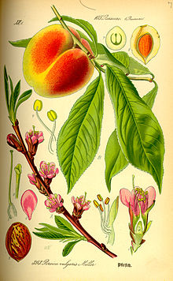
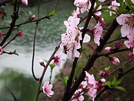

Peach
From Wikipedia, the free encyclopedia
This article is about the tree and its fruit. For the character in the Mario franchise, see Princess Peach. For other uses, see Peach (disambiguation). "Peach tree" and "Peaches" redirect here. For other uses, see Peachtree (disambiguation) and Peaches (disambiguation).
The peach (Prunus persica) is a deciduous tree first domesticated and cultivated in Zhejiang province of Eastern China.[3] It bears edible juicy fruits with various characteristics, most called peaches and others (the glossy-skinned, non-fuzzy varieties), nectarines.
The specific name persica refers to its widespread cultivation in Persia (modern-day Iran), from where it was transplanted to Europe. It belongs to the genus Prunus, which includes the cherry, apricot, almond, and plum, in the rose family. The peach is classified with the almond in the subgenus Amygdalus, distinguished from the other subgenera by the corrugated seed shell (endocarp).[4] Due to their close relatedness, the kernel of a peach stone tastes remarkably similar to almond, and peach stones are often used to make a cheap version of marzipan, known as persipan.[5]
Peaches and nectarines are the same species, though they are regarded commercially as different fruits. The skin of nectarines lacks the fuzz (fruit-skin trichomes) that peach skin has; a mutation in a single gene (MYB25) is thought to be responsible for the difference between the two.[6][7]


Description
Prunus persica grows up to 7 m (23 ft) tall and wide, but when pruned properly, trees are usually 3–4 m (10–13 ft) tall and wide.[9] The leaves are lanceolate, 7–16 cm (3–6+1⁄2 in) long, 2–3 cm (3⁄4–1+1⁄4 in) broad, and pinnately veined. The flowers are produced in early spring before the leaves; they are solitary or paired, 2.5–3 cm diameter, pink, with five petals. The fruit has yellow or whitish flesh, a delicate aroma, and a skin that is either velvety (peaches) or smooth (nectarines) in different cultivars. The flesh is very delicate and easily bruised in some cultivars, but is fairly firm in some commercial varieties, especially when green. The single, large seed is red-brown, oval shaped, around 1.3–2 cm long, and surrounded by a wood-like husk. Peaches, along with cherries, plums, and apricots, are stone fruits (drupes). The various heirloom varieties including the 'Indian Peach', or 'Indian Blood Peach', which ripens in the latter part of the summer, and can have color ranging from red and white, to purple.[10]
Cultivated peaches are divided into clingstones and freestones, depending on whether the flesh sticks to the stone or not; both can have either white or yellow flesh. Peaches with white flesh typically are very sweet with little acidity, while yellow-fleshed peaches typically have an acidic tang coupled with sweetness, though this also varies greatly. Both colors often have some red on their skins. Low-acid, white-fleshed peaches are the most popular kinds in China, Japan, and neighbouring Asian countries, while Europeans and North Americans have historically favoured the acidic, yellow-fleshed cultivars.
Peach trees are relatively short-lived as compared with some other fruit trees. In some regions orchards are replanted after 8 to 10 years, while in others trees may produce satisfactorily for 20 to 25 years or more, depending upon their resistance to diseases, pests, and winter damage.[11]
Etymology
The scientific name persica, along with the word "peach" itself – and its cognates in many European languages – derives from an early European belief that peaches were native to Persia (modern-day Iran). The Ancient Romans referred to the peach as malum persicum ("Persian apple"), later becoming French pêche, whence the English "peach".[12] The scientific name, Prunus persica, literally means "Persian plum", as it is closely related to the plum.